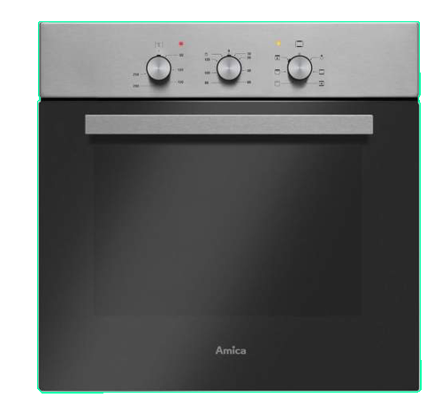
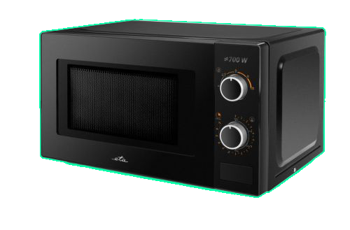
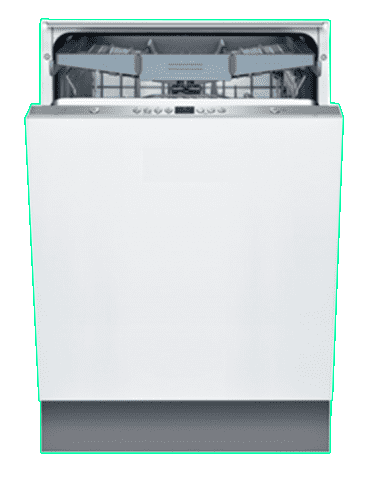
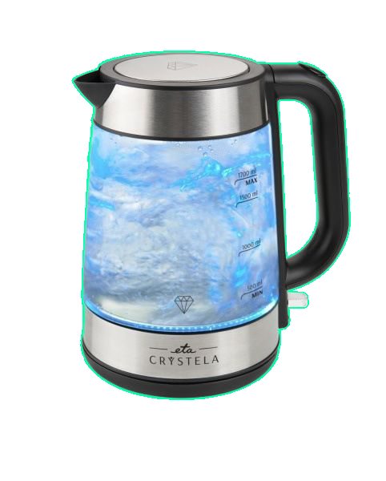
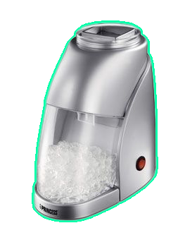

Veľké spotrebiče
AMICA TEM 18 X

Cena:179,00€
Parametre:
- Trieda energ.účinnosti: A
- Celk.vnútor.kapacita rúry: 62 L
- Gril: Áno
Podrobný popis:
Vstavaná rúra Amica TEM 18 X v nerezovom prevedení, zaradená do energetickej triedy A. Objem rúry je 62 litrov. Ponúka 9 programov ako napríklad klasické pečenie, gril, ventilátor alebo super rýchly ohrev. Posledný spomínaný program určite oceníte - na 150° sa zohreje v tej najkratšej možnej dobe – za 4 minúty! Pred nežiaducim popálením vás chráni trojité ochranné sklo, ktoré v prípade potreby možno jednoducho vybrať bez nutnosti zvesovania dverí. Súčasťou rúry Amica TEM 18 X je aj gril či špeciálny plech Procook so špeciálne antiadhéznou štruktúrou.
ETA 020990010

Cena:67,90€
Parametre:
- Vstavaný displej: Nie
- Počet programov: 5
- Dizajn skrine: voľnestojací
Podrobný popis:
Jednoduchá mikrovlná rúra Eta ETA020990010 s jednoduchým ovládaním v čiernom prevedení. Jej vnútorný objem je 20 litrov a priemer otočného taniera je 25,5 cm. Poskytne vám nielen ohrev, ale i skvelé funkcie na rýchle rozmrazovania. Vďaka časovaču si nastavíte presne takú dobu varenia alebo ohrevu akú potrebujete. Bezpečnostný systém zabezpečujúci automatické vypnutie rúry pri otvorení dvierok. Osvetlenie vnútorného priestoru rúry pre ľahkú kontrolu procesu varenia.Otváranie dvierok je pomocou tlačidla.
LORD D1

Cena:639,00€629,00€
Parametre:
- Šírka: 59,8 cm
- Maximálna hlučnosť: 44 dB
- Počet súprav riadu: 14
Podrobný popis:
Vstavaná umývačka riadu LORD D1 dokáže umyť až 14 obedových súprav. S hlučnosťou iba 44 decibel pracuje veľmi potichu. Efektívne usporiadanie riadu zabezpečuje systém košov VarioFlex v hornej i dolnej časti. Disponuje piatimi umývacími programami. V ponuke je aj množstvo ďalších praktických funkcií, ktoré vám prinesú do kuchyne maximálny komfort. Ovládanie pomocou LED displeja je veľmi jednoduché a intuitívne. LED displej informuje aj o zostávajúcom čase do konca umývacieho programu, alebo potrebe doplnenia soli alebo leštidla. K dispozícii je aj odložený štart o 24 hodín. Sveteľný lúč premietaný na podlahu a zvukový signál pomáha rozpoznať koniec programu.
ETA CRYSTELA 6153 90000

Cena:36,90€29,90€
Parametre:
- Príkon: 2200 W
- Nastaviteľná teplota: Nie
- Objem: 1700 ml
Podrobný popis:
Rýchlovarná kanvica Eta Crystela 6153 90000 ponúka elegantné a štýlové sklenené prevedenie s vnútorným osvetlením, čo prináša netradičný prvok pri varení vody. Objem kanvice je 1,7 litrov s príkonom 2200 W. Miesto vo vašej kuchyni ušetrí šikovne vymyslený priestor pre uloženie prívodnej šnúry. Bezpečnosť je zabezpečená automatickým vypnutím pri dosiahnutí bodu varu, vypnutím pri odobraní prístroja z podstavca a blokovanie zapnutia kanvice bez vody. Oceníte vyberateľný filter vodného kameňa a skryté ohrevné teleso. Na ergonomickej rukoväti spotrebiča nechýba ani praktické tlačidlo pre otvorenie veka.
PRINCESS 282984 DRVIČ ĽADU

Cena:44,90€39,90€
Podrobný popis:
Drvič ľadu Princess 282984 vyrobený z robustného plastu so striebornou povrchovou úpravou a osadený výkonným, ale tichým motorčekom o výkone 55W. Ľahko drví ľadové kocky. Stačí len ich vložiť do zásobníka a jednoducho stlačením vypínača budete mať za krátku chvíľu pripravenú ľadovú drť vhodnú pre prípravu miešaných nápojov a koktailov. Ľadová drť je tiež vhodná na chladenie rýb, ovocia alebo servírovanie dezertov.
Všetky autorské práva sú vyhradené ©Damián Jaroš/CGP/II.B